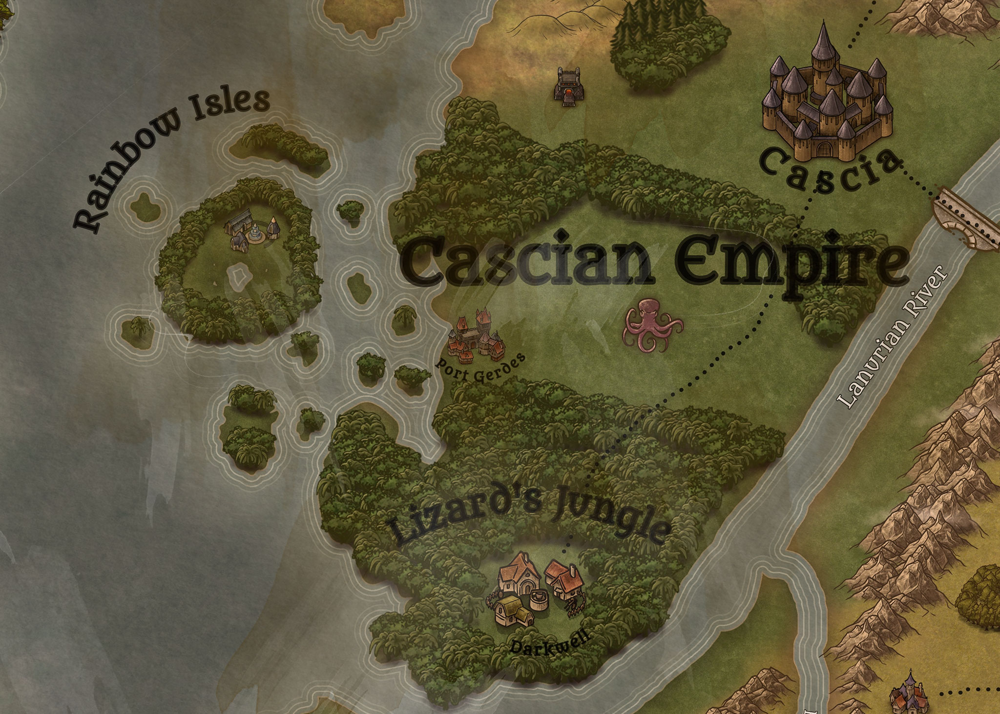

Regions
In the centuries after the wars of ice and fire, the new gods divided the eastern continent into five kingdoms. Each of these have their own history, laws, races, societies and of course rulers. There are three places on the main continent that officially don’t belong to any of the kingdoms though. Across the Ocean the continent of Madara again has its own, less influenced lore. Then there are many islands, mountain ranges and the lands past the Thundering Mountains. In the following chapter the most famous places will be shortly described.
The Cascian Empire
The Cascian Empire is by far the mightiest of the five kingdoms. Bordering on Vultai and Tarork, it is protected by the Demonic Peaks to the East and the Quisalorian Sea to the West. There is a warm climate nearly all year round, especially in the southern part of the country, which makes agriculture and logging one of the easiest industries. The North of the Empire is mostly flat with lots of space for fields and crops. There are lots of cities, towns and villages in this area and this region is probably the highest populated area in the world. The capital itself, Cascia, lies here as well. The biggest man made city has two great walls, hundreds of towers and many schools and libraries. The southern part of the Empire is filled with the Lizard’s Jungle, a dangerous place filled with many different races and creatures that dispute the reign of the Cascian Emperor. Only in the town of Darkwell does the military have a bigger presence. The Rainbow Isles are also a wild place. Piratery, thievery and other criminal activities are very normal here and a lot of people seem to embrace it. The Empire has been trying to rot out the thieves guild here for years, with little success so far. In Port Gerdes, the gigantic armada is positioned, just waiting to invade other countries and secure the coats of Xentaria. This is also the reason why the sigil of the Empire is a kraken. The Lanurian River makes its way through the kingdom as well, which gives the Empire direct access to Karagon, Vultai, Iseria and the Swamp Lands.
The Cascian Empire is home to the seat of the Alchemist Guild, the Crafts Guild and the Smiths’ Guild. The best weapons, ships, machines, potions and armor are produced here and sold around the whole world. That is a reason why the military power of the country is greater than that of any other. In 2617 the kingdom was first formed. After the war of ice and fire and the ‘Aston tribunal’, the goddess Cascia moved to this place and founded a home for her fellow humans. Safe from the icy north and the hot deserts she gathered many followers around her to build a city, today also known as Casica. She married here and had many children, starting a line of heirs that can be traced to today's emperor, Victor II. Over the years the Empire had many conflicts, especially with the Dwarves of Tarork and Karogon. In recent times the political situation between these parties has gone worse and many people fear the beginning of a war.
The Empire is also famous for tolerating slavery and necromancy, two things a lot of other nations look down upon. Thieves, murderers and tax evaders all have to fear for their freedom in case they get caught, then it is quite common for people to be sold if they commit crimes. And since Cascia herself was the goddess of death, many people practice necromancy. It is not openly encouraged, but in many places you can see undead servants helping out wizards or clerics on their daily tasks, a thing that many other kingdoms would punish with death. It is said that the palast in Cascia itself was built by an army of skeletons.
All these however are reasons though, why Cascia is probably the safest place in the world. Especially the northern part, beyond the Lizard’s Jungle, travel is very easy and crime rates are incredibly low. That is one of the reasons why so many people prefer to live in this country, then in other kingdoms.